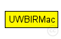
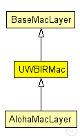

This documentation is released under the Creative Commons license
This documentation is released under the Creative Commons licenseThis class provides helper function for MAC modules that use the UWB-IR IEEE 802.15.4A model. Just before sending down a packet to the UWBIRPhyLayer, call prepareData(UWBIRMacPkt* packet). Just after receiving a packet from the UWBIRPhyLayer, call validatePacket(UWBIRMacPkt* packet) and check the returned bool value to know if the packet could be decoded successfully.
See the following publications for more information: [1] An Ultra Wideband Impulse Radio PHY Layer Model for Network Simulation, J. Rousselot, J.-D. Decotignie, Simulation: Transactions of the Society for Computer Simulation, 2010 (submitted). [2] A High-Precision Ultra Wideband Impulse Radio Physical Layer Model for Network Simulation, Jérôme Rousselot, Jean-Dominique Decotignie, Second International Omnet++ Workshop,Simu'TOOLS, Rome, 6 Mar 09. http://portal.acm.org/citation.cfm?id=1537714
The following diagram shows usage relationships between types. Unresolved types are missing from the diagram. Click here to see the full picture.
The following diagram shows inheritance relationships for this type. Unresolved types are missing from the diagram. Click here to see the full picture.
| Name | Type | Description |
|---|---|---|
| BaseMacLayer | simple module |
Base module for every mac layer module |
| Name | Type | Description |
|---|---|---|
| AlohaMacLayer | simple module | (no description) |
| Name | Type | Default value | Description |
|---|---|---|---|
| notAffectedByHostState | bool | false | |
| coreDebug | bool | false |
debug switch |
| headerLength | int |
length of the MAC packet header (in bits) |
|
| address | string | "auto" |
MAC address as hex string (12 hex digits), or "auto". "auto" values will be replaced by a generated MAC address in init stage 1. |
| debug | bool | false |
debug switch |
| stats | bool | true | |
| trace | bool | false | |
| RSDecoder | bool | true | |
| packetsAlwaysValid | bool | false | |
| PRF | int | 4 |
Pulse repetition frequency, either 4 or 16 MHz currently |
| Name | Value | Description |
|---|---|---|
| class | UWBIRMac |
| Name | Direction | Size | Description |
|---|---|---|---|
| upperLayerIn | input |
from upper layer |
|
| upperLayerOut | output |
to uppe layer |
|
| upperControlIn | input |
control from upper layer |
|
| upperControlOut | output |
control to upper layer |
|
| lowerLayerIn | input |
from lower layer |
|
| lowerLayerOut | output |
to lower layer |
|
| lowerControlIn | input |
control from lower layer |
|
| lowerControlOut | output |
control to lower layer |
// // This class provides helper function for MAC modules that use the UWB-IR IEEE 802.15.4A model. // Just before sending down a packet to the UWBIRPhyLayer, call prepareData(UWBIRMacPkt* packet). // Just after receiving a packet from the UWBIRPhyLayer, call validatePacket(UWBIRMacPkt* packet) // and check the returned bool value to know if the packet could be decoded successfully. // // See the following publications for more information: // [1] An Ultra Wideband Impulse Radio PHY Layer Model for Network Simulation, // J. Rousselot, J.-D. Decotignie, Simulation: Transactions of the Society // for Computer Simulation, 2010 (submitted). // [2] A High-Precision Ultra Wideband Impulse Radio Physical Layer Model // for Network Simulation, Jérôme Rousselot, Jean-Dominique Decotignie, // Second International Omnet++ Workshop,Simu'TOOLS, Rome, 6 Mar 09. // http://portal.acm.org/citation.cfm?id=1537714 // simple UWBIRMac extends BaseMacLayer { parameters: @class(UWBIRMac); bool debug = default(false); // debug switch bool stats = default(true); bool trace = default(false); bool RSDecoder = default(true); bool packetsAlwaysValid = default(false); int PRF = default(4); // Pulse repetition frequency, either 4 or 16 MHz currently }
This documentation is released under the Creative Commons license